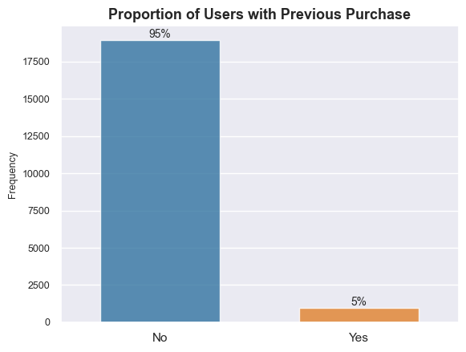

1 Introduction
Businesses face challenges in identifying and prioritizing potential customers and/or identifying future purchase potential of current customers based on their email interactions, leading to suboptimal allocation of resourcesa and missed opportunities.
Email lead scoring plays a crucial role in determining the quality and conversion potential of leads generated through email marketing campaigns. Email lead scoring is a method used by marketers and sales teams to evaluate and prioritize leads based on their potential to become customers. It involves assigning scores or ratings to individual leads based on their behaviour, interations, and other characteristics. However, the traditional manual lead scoring methods are time-consuming, subjective, and often produce inconsistent results. Additionally, these methods do not fully leverage the available data, such as email content, sender information, and historical customer interactions.
Machine learning based solution that can effectively evaluate the probability of leads converting into customers based on various data points extracted from email interactions. This solution should take into account factors like email open rates, click-through rates, response times, engagement patterns, and historical customer data to provide a comprehensive lead score.
By leveraging machine learning algorithms, such as classification models businesses can create a reliable and automated system that can accurately score and rank email leads according to their conversion potential. The solution will empower email marketers to prioritize their efforts and resources more effectively, enabling them to focus on the most promising leads and improve overall sales and marketing efficiency.
This project demonstrates and end-to-end email lead scoring solution for a business, from initial analysis, to modeling, to deployment. Skills demonstrated in this project include -
Project management.
Stakeholder management.
Business understanding.
Business return on investment and sensitivity analysis.
Exploratory data analysis.
Machine learning (using tools like python, pycaret, mlflow).
Model deploying (using tools like fastapi and streamlit).
Above all, the project demonstrates how to solve key business problems in the real world.
2 Problem Statement & Objective
As mentioned earlier, this analysis provides a lead scoring solution for a company for an online educational company. The company offers training cources (their main product) in data science and has a large email list of 100,000 subscribers, with a monthly growth rate of 6,000 new subscribers. The marketing team also sends out 5 emails per month and the business’s scales cycle generates approximately $550,000 in revenue per month.
However, the email list also experiences a significant number of unsubscribes, about 500 per email, resulting in a total of 2,500 unsubscribers per month.
This High unsubscribe rate indicates potential inefficiencies in the email marketing strategy. In addition, high unsubscribe rates can result in reduced revenue especially if the business relies heavily on email marketing as a primary channel for generating leads and driving conversions. To sustain and increase revenue, it is crucial to optimize the email marketing approach and maximize customer conversion rates. The business also believes that nurturing lost customers has the potential to convert approximately 5% of them back into active customers.
2.1 Objective
Given these key insights, the problem at hand is to develop an effective email list scoring and segmentation strategy. The goal is to identify and prioritize the most valuable customers (in terms of probability to make a purchase) to target for sales emails, while also identifying customers with low probability of purchase to nurture and increased their likelihood to purchase.
In summary, the primary objective is to leverage email list scoring and segmentation techniques to improve customer engagement, reduce unsubscribes, increase customer conversion rates, and ultimately maximize revenue and customer lifetime value.
Now that we have a general understanding of the problem statement and the objective, the next sections will focus on a business solution process using the Business Science Problem Framework (BSPF).
3 Business Understanding
This section falls under the Understanding drivers Phase of the BSPF
Addressing business challenges like these demands significant resources, including both time and money. Therefore a key question to ask is “is this problem worth solving?”
In this phase, the key is to highlight why this problem should be a business prority. One way to achive this is by calculating the cost of the business problem by understand how high unsubscribe rates lead to lower revenue. Our goals in this phase include -
Cost Assessment - Assign a cost to high unsubscribe rates, thus giving the business a point estimate of annual costs of unsubscribe rates. This step does NOT account of growth rate of email lists.
Improve Cost Analysis - Improve on cost assesment by account for email list growth uncertainty.
Business Cost Simulation - This is also necessary when accounting for uncertainty and helps model cost when key inputs change.
3.1 Cost Assessment
Given the values highlighted in the problem statement section, we can estimate the monthly lost revenue (we’ll refer to this as cost going forward) due to unsubscribers to be around $250K per month (or $3M annually), not factoring in email list growth rate.
After factoring in a 3.5% monthly email list growth rate, we can expect the annual lost revenue due to unsubscribers to rise to around $364K per month (or $4.3M per year), an increase of 46% in lost revenue. The table below shows this scenario -

We can see the high cost of this problem which is the lost revenue to the business. However, the values shown in the table above do not factor in uncertainty. We can thus improve on our cost assessment by factoring in uncertainty in some of the drivers. Let assume some monthly variablity in email list growth rate and conversion rate. The heatmap below shows a cost simulation with variablity. The y-axis represents various levels of customer converstion rate while the x-axis represents various levels of email list growth rate;

We can see that regardless of how the drivers vary, we can still expect to see annual costs ranging from $2.61M to $4.38M. Thus this is definitely a problem worth solving.
At this point, a key question is “can we reduce the unsubscribe rate?”. Recall that the business is loosing 500 customers for every email sent out. What if we can reduce that number by 50% (or 250), while maintaning 90% of revenue. What impact will that have on the business?
The only problem is that we still do not know a lot about what causes a subscriber to make a purchase. If we do, we can focus on targeting the ones that are more likely to purchase with sales emails and nurture the ones who are unlikely to covert at the moment. This will help with our goal of reducing the unsubsbribe rate while maintaning 90% of revenue.
4 Data Understanding
This section falls under the Understand The Drivers Phase of the BSPF
This phase requires understanding the data available at our disposal to tackle this problem. The visual below gives an overview of the company’s crm database including table and field descriptions. Connecting arrows show how each table can be linked to other tables based on common fields.

Note: We will not be using the website table in this project.
4.1 Exploratory Data Analysis
After some initial data manipulation to get the data in the right format we need for analysis, including adding a target feature which is a binary flag of if a user has made a previous purchase or not (we’ll call this target feature made_purchase), we can then begin to do some initial exploratory analysis to get a sense what features in our dataset could be predictive of users making a purchase.
First lets analyze our target feature made_purchase.
4.1.1 Proportion of Users with Previous Purchase
